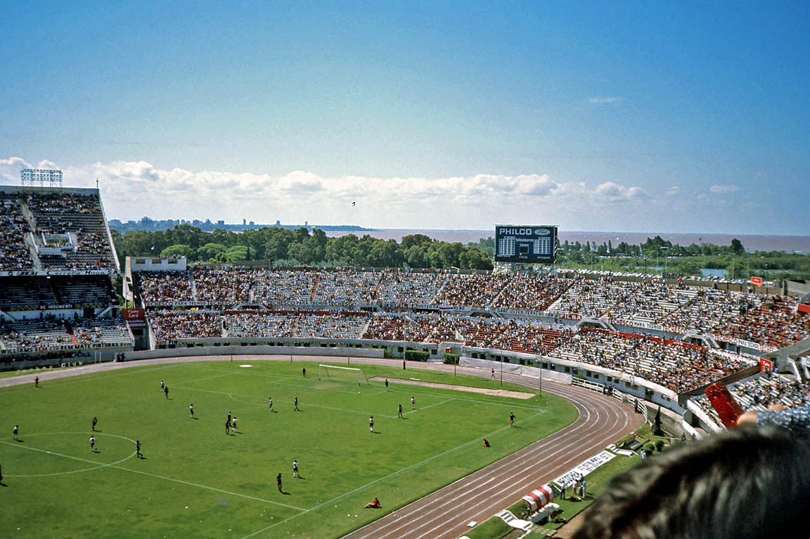

Historia del Estadio Monumental
El estadio comenzó a construirse el 27 de septiembre de 1936 y se inauguró oficialmente el 25 de mayo de 1938, con lo cual la obra demandó poco menos de dos años, tiempo récord para semejante estadio con las técnicas con las que se trabajaba. Cuando se diseñó el Monumental el proyecto original constaba de cuatro grandes tribunas. Como el dinero del préstamo bancario no alcanzó para levantar la totalidad de las gradas, el estadio se inauguró con forma de herradura. El mito popular cuenta que mucha gente siempre creyó que la forma de herradura era la estructura definitiva del Monumental, formando la famosa "ventana al Río de la Plata" y que la construcción de la actual tribuna Sívori, comenzada con la venta de este jugador en 1958 y concluida en 1978 en ocasión del Mundial, era un agregado que no figuraba en el proyecto original. Sin embargo siempre estuvo contemplada. Con excepción a la tribuna Centenario (llamada así porque la avenida Figueroa Alcorta llevaba ese nombre hacia 1938), las tribunas del Monumental tenían nombres diferentes de los actuales. La tribuna Belgrano se denominaba Río de la Plata, porque la actual avenida Udaondo llevaba ese nombre, mientras que la tribuna San Martín era simplemente llamada Social, ya que la misma era destinada a los socios, personalidades y autoridades. La tribuna Sívori iba a llamarse Colonia (porque en los días más despejados se llegaba a ver al otro lado del río la ciudad uruguaya desde la actual Belgrano Alta), algo que no llegó a ocurrir dado que recién se levantó 20 años después de la inauguración del estadio. Finalmente una vez finalizada aquella tribuna se la llamó Almirante Brown por las proezas de aquel prócer en ese río. Luego en febrero de 2005, después del fallecimiento de Omar Sívori, la tribuna sería renombrada con su apellido a modo de condecoración y agradecimiento.16 La primera tribuna en ser construida fue la actual San Martín. Luego se realizó la Belgrano, quedando en medio de ambas el espacio para hacer las tribunas Colonia (Sívori) y Centenario. Por ende, esta última fue la tercera en ser levantada, y su finalización derivó en la inauguración del Monumental en 1938.
1951 Tribuna Sívori en los años 1970. En el marco de los Juegos Panamericanos de 1951 en Buenos Aires, el estadio albergó la ceremonia de clausura y los eventos de atletismo. Para acondicionar al estadio para el atletismo, se debió reformar la pista olímpica del estadio, porque esta poseía solo 6 andariveles, y esto no permitía el desarrollo de las pruebas. Entonces se tuvieron que construir los 2 carriles faltantes a base de carbonilla gruesa de 15 cm, 50% de carbonilla molida, 30% de tierra negra zarandeada y 20% de polvo de ladrillo, para poder realizar una prueba de fondo correctamente. 1958 La herradura se cerró parcialmente en 1958, bajo la presidencia de Enrique Pardo y para esa nueva construcción, la platea Colonia, fue decisivo el dinero ingresado (18 millones de pesos) por la transferencia de Omar Sívori a la Juventus de Italia. Con la conclusión de la tribuna, la capacidad era de 30 000 personas.
El estadio Monumental fue designado sede por el gobierno de Perón en 1974, en virtud de sus cualidades edilicias y ubicación estratégica, sin embargo por parte del Estado Nacional y FIFA se crea un ente previo al mundial En 1976 la Junta Militar encabezada por el teniente general Videla, que había tomado el poder mediante un golpe de Estado, creó un organismo denominado Ente Autárquico Mundial '78 (EAM 78), el cual se encargaría de la remodelación de estadios, la construcción de tres inmuebles, y del desarrollo total de la infraestructura logística, turística y de comunicaciones.18 Entre los estadios que el EAM 78 remodelaría, se encontraban el de River Plate, Vélez Sársfield, Rosario Central, el de la ciudad de Mendoza (construido en la falda del Cerro de la Gloria), el de Mar del Plata y el de Córdoba, emplazado en la zona de Chateau Carreras. El proyecto EAM 78 estaba en manos del Ejército, que debía asegurarse que el dinero que se manejaba en el Mundial no debía de ser “justificado". Este dinero fue utilizado principalmente para construir estadios que costaron aproximadamente 5 veces más que los de España 1982. Fue desde su asunción que los costos comenzaron a trepar de modo inaudito, hasta alcanzar los 520 millones de dólares.192021 Durante el lapso en que estuvo cerrado el Monumental, el equipo de fútbol de River actuó de local en el Estadio Tomás Adolfo Ducó del Club Atlético Huracán.
En 2014 la dirigencia encabezada por Rodolfo D'Onofrio presentó un proyecto de remodelación para el estadio. El mismo tenía como objetivo la ampliación de la capacidad de espectadores hasta 80 mil localidades.22 Entre las principales modificaciones, se encontraban el agregado de butacas en las tribunas superiores y la eliminación de la fosa y la pista de atletismo, extendiendo las tribunas bajas hacia el campo de juego. Además, se planeó que la tribuna media en los laterales del estadio se conviertan en una zona exclusiva de palcos en dos niveles y el techado de todas las tribunas.23 El 30 de noviembre de 2014 se realizó la instalación de una nueva pantalla LED en la tribuna Sívori, la cual reemplazó al antiguo reloj gigante que había sido colocado para la celebración de Argentina 1978.24 La nueva pantalla tiene unas dimensiones de 19,45 m de largo y 7,16 m de ancho, un total de 139,26 m² lo que la convierte en la pantalla más grande de un estadio en Sudamérica.2526 En enero de 2018, la dirigencia de River anunció la eliminación de los alambrados perimetrales en los sectores de las tribunas Sívori y Centenario bajas.27 Estas reformas lograron que la capacidad de espectadores aumentara en 3000 personas, ya que se recuperaron seis filas de asientos en cada tribuna. En su lugar, fueron instalados cercos perimetrales de dos metros de altura sobre el segundo carril de la pista de atletismo.28 Dichas remodelaciones también respondieron a un pedido por parte de los organismos de seguridad, quienes buscaban evitar la colocación de banderas que dificultasen la visualización de los partidos a los espectadores.29 En agosto de 2019 la capacidad del estadio Monumental aumentó a 70 074 espectadores tras la aprobación de algunas obras por parte de los organismos de seguridad.30 A finales de 2020 se iniciaron las obras para remover la pista de atletismo y el reemplazo de todo el césped del campo de juego.31 Fue instalado un césped híbrido (95 % de pasto natural y un 5 % sintético), que incluye un mecanismo de aireación y drenaje de última generación.32

Durante febrero de 2022 la presidencia de River Plate presentó la fase 2. Incluye el trabajo para impermeabilizar las tribunas altas y el cambio de 40 mil butacas.33 El contará con nuevas tribunas bajas inferiores, 180 palcos, 926 plateas hospitality, restaurante 24/7 y circulación 360° en palcos, tres nuevos niveles de estacionamiento y un nuevo edificio para el Instituto River, entre otras importantes innovaciones.34 Se construyó un túnel único. Se espera que para 2024 esté toda la obra finalizada, con una capacidad de 84 567.35 El 16 de agosto de 2023 se presentó el restaurante Banda. Un recinto de lujo de 700 m² en la tribuna Centenario con vista al campo de juego.36